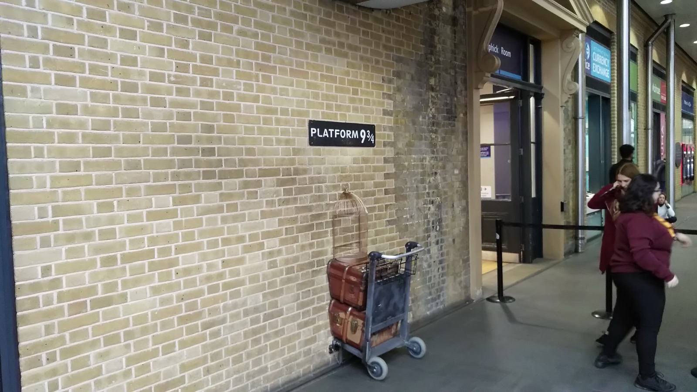
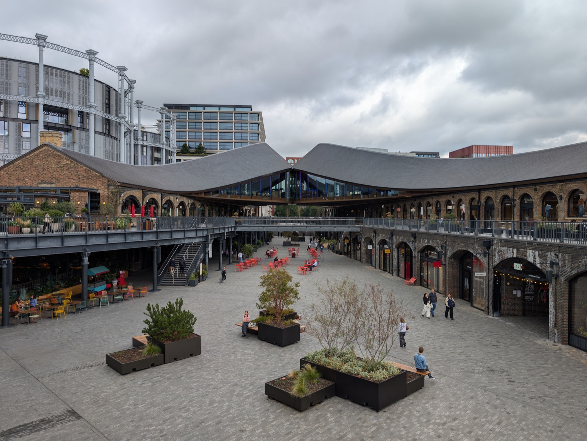
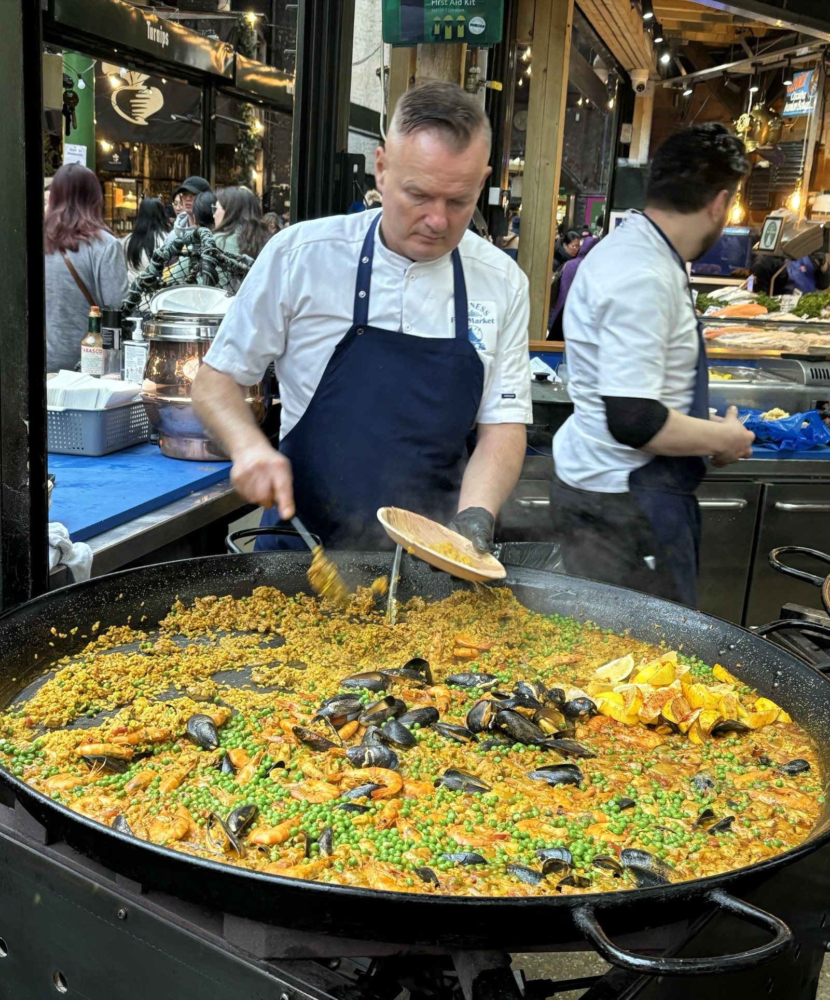
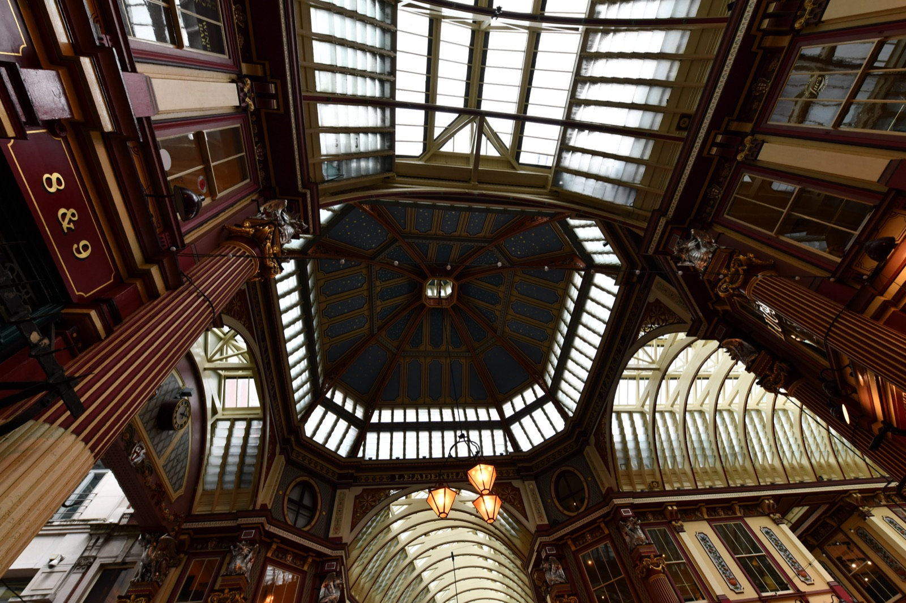
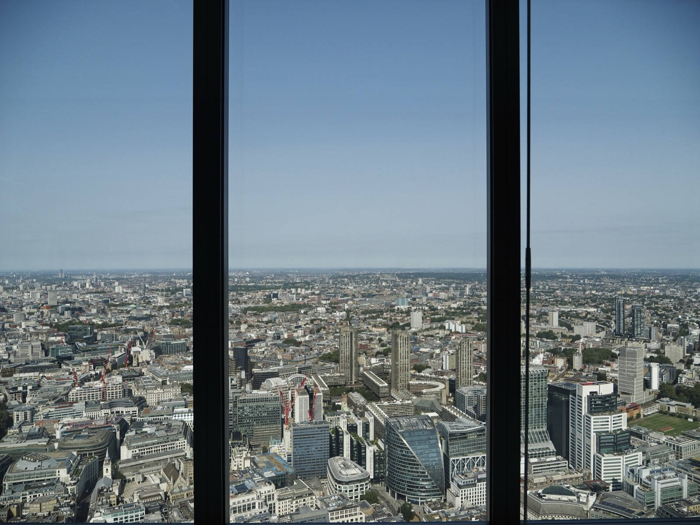
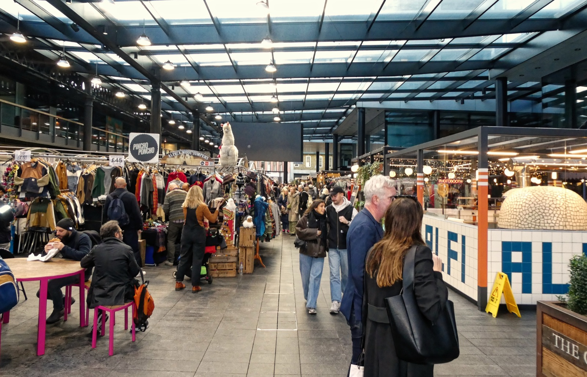
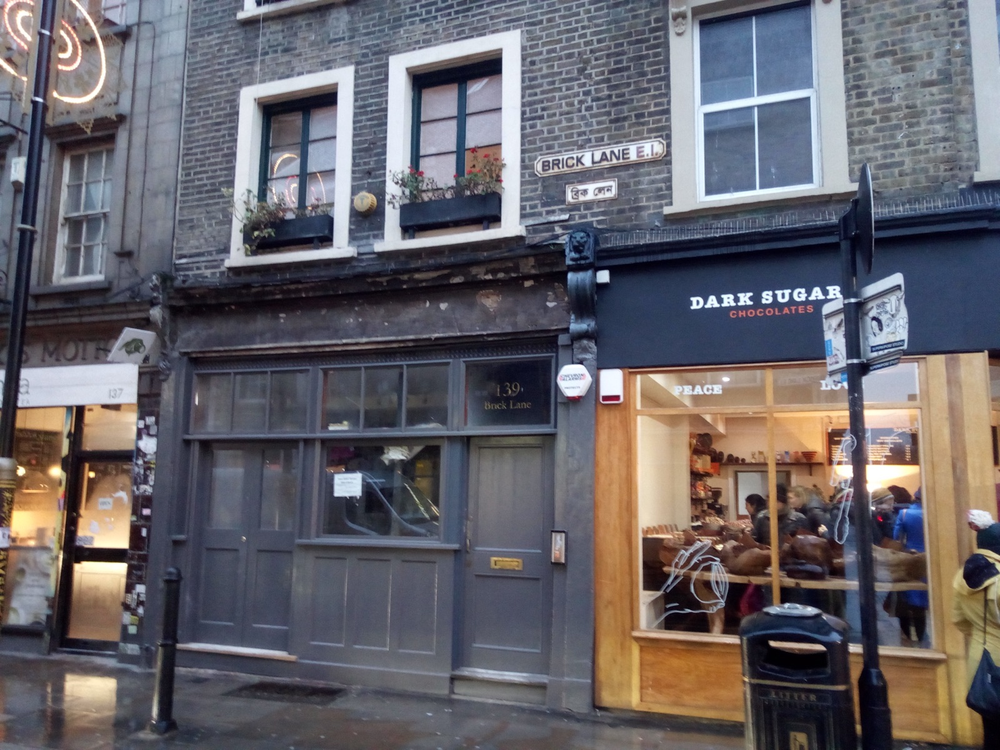

The weather
Cold, dry and built for it. Every big stop is indoors or under a roof: Lightroom, Borough’s market halls, Leadenhall’s glass roof, a glass box 58 floors up, and Spitalfields’ covered market. The outdoor bits are short walks between them. Wear a proper coat. It is about 8°C by the evening in Brick Lane. The blue figures are the chance of rain.
Forecast from Open-Meteo for central London, checked Tuesday 13 October. Look again on Friday night.
King’s Cross
Ten minutes from the platform she’s inside a cracking piece of cheese-loving animation, four storeys high.
The West Coast line is shut between Rugby and Stafford on 17 and 18 October. Avanti is sending Manchester trains the long way through Birmingham. They skip Wilmslow and take over three hours. Check her ticket against the times below.
Wilmslow → Euston
A short hop to Stockport, then the diverted Avanti from there.
| 07:50 | Wilmslow, Transport for Wales train towards Manchester |
| 08:00 | Stockport, change here |
| 08:24 | Stockport, Avanti to London Euston, via Birmingham |
| 11:27 | London Euston |
Good to know
- The same train starts at Manchester Piccadilly at 08:14. The one before gets in at 10:32, and the one after gets in at 12:20.
- Times are from Realtime Trains, checked 13 October. Check National Rail again on Friday.
Platform 9¾, on the way
Optional photoEuston to King’s Cross is an eight-minute walk east along Euston Road. Inside King’s Cross is the trolley vanishing into the wall from Harry Potter. Staff hand you a house scarf and photograph the leap. There is usually a queue, so take your own photo from the side if it is long.

Wallace & Gromit, Larger Than Life
Book the 12:00 slotThe headline of the day, and it opened on Wednesday. Lightroom is a huge box behind King’s Cross with eleven-metre walls and a floor that are all projection. For Aardman’s 50th birthday, it is filled with Wallace & Gromit, Shaun the Sheep and the rest. That includes the train chase from The Wrong Trousers at full size, and new stop-motion made just for this room. You sit or wander inside it.
Good to know
- Adults from £25, plus a £2 fee per order. Slots run every half hour. Arrive no more than 15 minutes early.
- The show is a 50-minute loop with no fixed start, and you can stay for a second loop if there is space.
- Lightroom is at 12 Lewis Cubitt Square, N1C 4DY. Book on lightroom.uk directly, not a reseller.
Granary Square & Coal Drops Yard
WanderOut of Lightroom and two minutes down to the canal. Granary Square has over a thousand dancing fountain jets in the ground. Coal Drops Yard is two Victorian coal sheds whose roofs were pulled together until they kiss, now full of shops. Fifteen minutes, then back to the station.

From King’s Cross St Pancras, take a southbound Northern line train via Bank, five stops to London Bridge, about 15 minutes. Use the Borough High Street exit.
Borough & the City
Lunch eaten standing up, one bite at a time, then over the river into Diagon Alley.
Borough Market, grazing lunch
Share everythingLondon’s oldest food market, more than a thousand years in one form or another, under Victorian iron and the railway viaduct. Saturday is loud, packed and the most fun day to go. Don’t sit down for lunch. Split up, grab one thing each, swap halfway, and repeat.

The crawl
- Raclette at Kappacasein. Melted cheese scraped onto potatoes in front of you. Skip their famous toastie queue if it is huge.
- Chorizo roll at Brindisa, on the corner by Stoney Street. It is a cult favourite.
- A plate from the giant paella pans in the Borough Market Kitchen area, where the hot street food is.
- Bread Ahead doughnut for pudding, custard or salted caramel, and share it.
- Monmouth Coffee on Stoney Street for a flat white to carry onwards.
Walk north over London Bridge. Look right for Tower Bridge and HMS Belfast, then up Gracechurch Street. It takes about 15 minutes.
Leadenhall Market
FreeA Victorian market arcade painted maroon, cream and gold under a glass roof. It played Diagon Alley in the first Harry Potter film, which neatly bookends Platform 9¾. On a Saturday the City’s office workers are gone, so you get it almost to yourselves for photos.

Good to know
- Most shops shut at weekends, but the arcade itself is always open, and the quiet is the point.
- The blue door at 42 Bull’s Head Passage stood in for the Leaky Cauldron entrance.
The Sky
Fifty-eight floors up in the tallest tower in the City, and it costs nothing.
Horizon 22
Free · book a slotThe highest free viewing gallery in Europe, on level 58 of 22 Bishopsgate, about 254 metres up. That is far higher than the Sky Garden, and you look down on the top of the Gherkin. Floor-to-ceiling glass gives a 300-degree view: the Shard straight ahead, Tower Bridge below, and on a clear afternoon out to the edges of the city. It is five minutes’ walk from Leadenhall.

Good to know
- Saturdays it is open 10:00 to 17:00, so a 15:45 slot gives a full hour as the light starts going gold.
- Free tickets are released every Monday at 10:00 for the next 14 days, so Saturday’s are already out. Book now. If they are gone, some walk-in places are held back each day.
- There is airport-style security, so travel light. A café and bar are up top.
Spitalfields & Brick Lane
Market lights, painted walls, chilli chocolate and a proper curry, and then the train is five minutes away.
Old Spitalfields Market
WanderTen minutes’ walk up Bishopsgate. A big Victorian market hall with a glass roof and Saturday stalls of jewellery, prints and vintage, plus street-food kitchens that keep going into the evening. Browse here while the sun goes down at 18:03.

Brick Lane: walls, chocolate, beigels
Over Commercial Street into Brick Lane. The yards off it, around Hanbury Street and the old Truman Brewery, change their giant murals every few weeks. Blue hour is when they look best and the neon comes on.

Two stops worth queueing for
- Dark Sugars at number 141. Hot chocolate made with a pile of shaved chocolate, and the one to get has chilli in it. The shop is a cave of hand-made truffles too.
- Beigel Bake at number 159. It is open 24 hours, and has been there since 1974. The hot salt-beef beigel with mustard is the London classic. Share one as a starter, or take one to her aunt.
- The Upmarket and Backyard Market at the Truman Brewery run until about 17:30 to 18:00 on Saturdays, so they will be packing up by now.
Dinner at Gunpowder
Book 18:30A tiny, buzzy Indian kitchen tucked down White’s Row, and in the Michelin Guide. Small plates of home-style cooking from around India: spicy venison and vermicelli doughnut, lamb chops, the crab, chaat. Order five or six plates between two.
Good to know
- It is small and often full on Saturdays. Book online, and phone if online shows nothing.
- Back-up plan: Dishoom Shoreditch is ten minutes away and takes walk-ins, or the curry houses on Brick Lane itself.
- If her aunt is cooking, swap dinner for chai and two small plates.
Elizabeth line to Brentwood
Five minutes’ walk to Liverpool Street. Take any eastbound Elizabeth line train showing Shenfield and get off at Brentwood about 35 to 40 minutes later, no changes. Warley is a short lift from the station.

Good to know
- Trains run every few minutes, so there is no fixed time to catch.
- Abbey Wood trains do not go to Brentwood. Only take one showing Shenfield.
- Contactless works all the way. Check TfL status on the day.
Swap-ins & what else is on
Absurd City
Westfield London · opened 15 OctThe Boomtown festival team’s 80,000 sq ft surreal walk-through city, two days old. It needs three hours and is out west in White City, so it would replace Borough and the City.
What it isHalloween at Kew
Kew Gardens · from 18:00A 1.5 km lit-up night trail with fire artists and performers, which started the night before. It is magic, but it sits in the far west and Brentwood is in the far east.
DetailsSky Garden
Fenchurch St · open until 21:00 SatFree, but you have to book. It is lower than Horizon 22 but open past sunset, so the lights coming on are the show. The outdoor terrace shuts earlier at weekends.
BookFrieze Sculpture
Regent’s Park · park hoursEleven big sculptures in the autumn leaves during Frieze art fair week. It is 15 minutes’ walk from Euston if she arrives early.
About itFilm Festival closing weekend
BFI Southbank & IMAXFree drop-in games lounge and immersive pieces from 13:00 to 21:00, and a 2016-themed DJ night from 21:00.
ProgrammeDiwali on the Square
Trafalgar Square · Sun 25 OctThe Mayor’s free Diwali festival, with music, dance and food stalls. It is the weekend after, but worth knowing about.
DetailsGathered 13 October from Time Out, Visit London, Londonist, Immersive Rumours, DesignMyNight and the venues’ own sites.
Before the day
Book now
- Lightroom, Wallace & Gromit, Saturday 12:00, two adults, on lightroom.uk
- Horizon 22, free slot Saturday 15:45 for two, on horizon22.co.uk
- Gunpowder Spitalfields, Saturday 18:30 for two
- Check her train ticket against the diverted times
- Tell her aunt about 20:30 at Brentwood station
- Photo ID for Horizon 22 security, plus contactless for the Tube
- Warm coat and a power bank, since there are a lot of photos today
If something slips
- Train late: take a later Lightroom slot and cut Coal Drops Yard
- No Horizon 22 tickets: try the walk-in queue, or book Sky Garden for 17:30 and see sunset there
- Borough too crushed: Maltby Street Market in Bermondsey is quieter and about 15 minutes’ walk east
- Rain: everything big is under a roof. Only the walk over London Bridge gets wet, so take the Northern line one stop to Bank instead
- Gunpowder full: Dishoom Shoreditch walk-in, or a Brick Lane curry house